Creating a new detail tab in SQL Explorer
This tutorial shows you how you can add new tabs in the database detail view.
First, let's have a look at what we will do.
In the image below, you can see that the database node was selected in the database structure view. Now, when we look at the database detail view, all we can see is the 'Connection Info' tab.
Wouldn't it be nice if we could have a tab that shows the process list info for the database? This way, we wouldn't have to keep executing the 'show full processlist' SQL statement to get to this information.
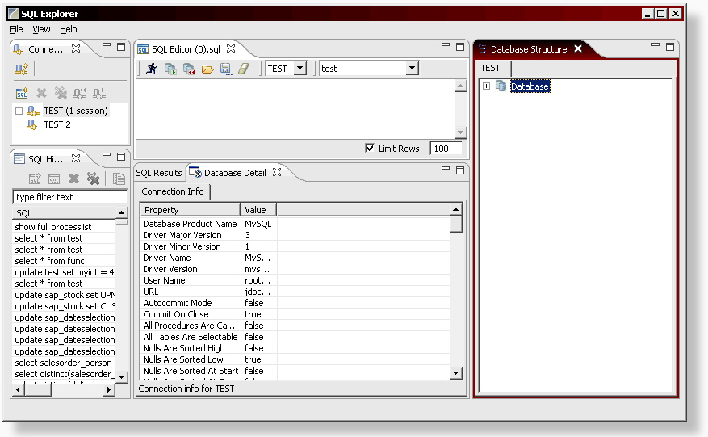
Step 1: If you haven't done so already, open the manifest.mf file. The file is located in the META-INF folder of your fragment project.
Switch to the extensions tab. And yes, you've guessed it: click on the 'Add' button to proceed.
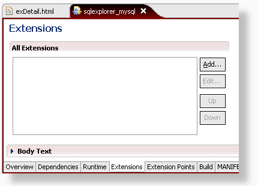
Step 2: In the window that is presented, you'll need to locate and select the net.sourceforge.sqlexplorer.nodeDetailTab extension point.
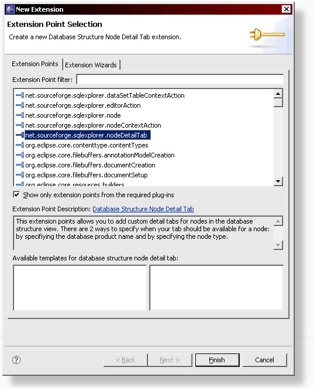
Step 3: Now right click on the extension point and select New > detailtab.
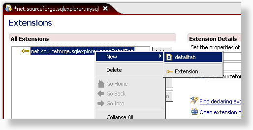
Step 4: Here we enter the details of our extension point.
The name can be anything you like, but make sure
that the id starts with 'net.sourceforge.sqlexplorer.<yourdbname>.'
I like to keep all tabs together in one package, so in this example, we'll use 'net.sourceforge.sqlexplorer.mysql.tabs.ProcessTab' as the class name.
This class doesn't have to exist yet. As you'll see in a moment, eclipse will generate it for us.
The database-product-name field is used by SQL Explorer to determine when a feature should be available. We wouldn't want this new process tab to show up when connected to an Oracle database, so we enter 'MySQL*' to match any MySQL database. To identify the correct name, you can look at the database connection info tab. SQL Explorer uses the Database Product Name attribute to do the matching. If you scroll back up to the very first image in this tutorial, you can see it lists MySQL.
Good, you found your way back down here. Let's continue.
Every node in the database structure view has got a type. This allows us to correctly identify when the detail page should be displayed. In this case, we only want to show the tab when the database node is selected, so we enter 'database'. If you want the tab to be available to more than one type, just add more types, seperated by commas.
Other types that are generally available are: catalog, schema, table, index, procedure, materialized_view, package, package_body, ... it really depends on what database you are using.
Now, let's click on the 'class' link to generate our class file.
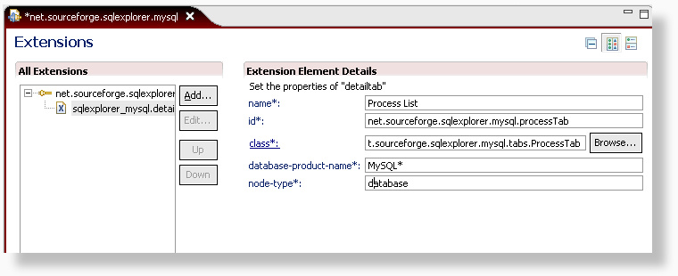
Step 5: Normally, we wouldn't have to do anything here, but the default super class is AbstractTab. This class gives us a blank canvas to draw the detail page on and that's too much work in this case.
SQL Explorer currently provides 5 different base classes that can be extended to create a new tab:
- AbstractTab:
This is the most basic implementation. It provides you with a composite on which you can do whatever you like. - AbstractDataSetTab:
This is a tab implementation extends AbstractTab that displays a column grid like the SQL results. All you have to do is provide DataSet which holds the data to populate the grid. A DataSet can be constructed from a resultset, an sql statement or an array. - AbstractSQLTab:
This is an extension of AbstractDataSetTab. All that is required here is to add an SQL statement, and the dataset is generated for you. - AbstractSourceTab:
AbstractSourceTab extends AbstractTab and provides a tab prepopulated with a text viewer. All you have to do here is add the text. - AbstractSQLSourceTab:
AbstractSQLSourceTab extends AbstractSourceTab and allows you to populate the text viewer by providing an SQL statement.
Let's change AbstractTab to AbstractSQLTab. This will provide us with an easy to use tab that is preconfigured for handling SQL statements.
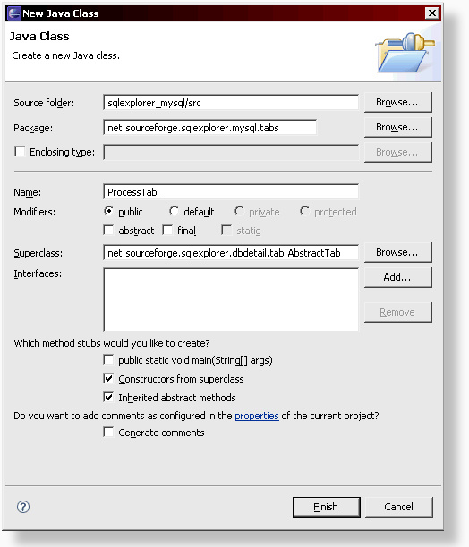
Step 6: We have our new class now, but before we change it, let's open the text.properties file and add some text variables that we can use in our detail tab. When you name your properties, I recommend always starting with <yourdbname>. , this will avoid conflicts with other extensions.
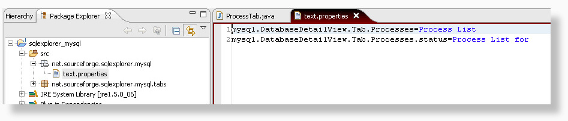
Step 7: In our new class, we override 3 methods of the parent AbstractSQL class.
getLabelText(): This method should return the value that will be displayed on the 'tab' of our new tab.
We can use Messages.getString("propertyName") to retrieve the proper text from our text.properties file that we updated
in the previous step.
getSQL(): All we need to here is return the SQL statement we want to execute.
getStatusMessage(): This method returns the text that is displayed at the bottom of the tab.
In this case, we want to display some text, followed by the session name, which we can find by calling getNode().getSession().toString().
getNode() always returns the node that is selected in the database structure view. getSession() returns the active session to which the node belongs.
And you've guessed it: getSession().toString() returns the session name.
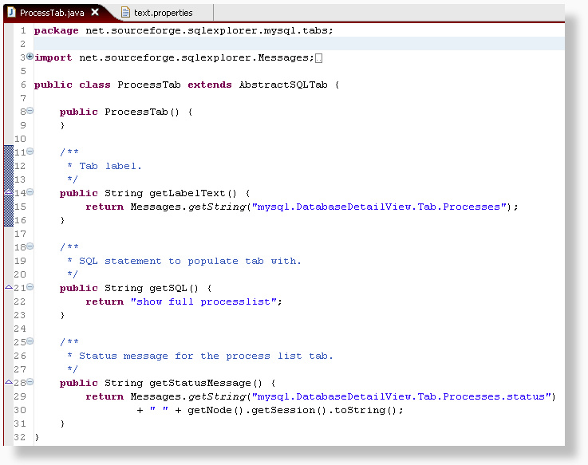
Step 8: To test our application, we need to create a new run configuration. Select Run > Run... from the menu.
Highlight 'eclipse application', right click and select New.
In the 'Program to Run' section, select 'Run an application' and select 'org.eclipse.ide.ui.workbench'.
On the plugin tab, make sure that both the SQL Explorer plugin and your fragment are selected.
Below you can see the result. A brand new tab when the database node is selected.
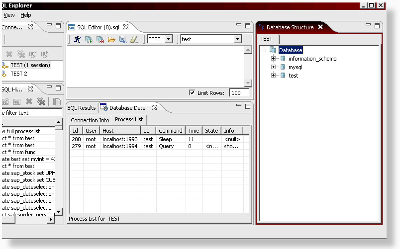
A slighty more difficult example
In the above example we used a simple sql statement. Using the AbstractSQLTab, it is also possible to use a SQL statement that requires parameters. All that is required in addition to all the steps followed above, is to override an additional method: getSQLParameters(). This method should return all the parameter values that are required for the SQL statement. An example is shown below.
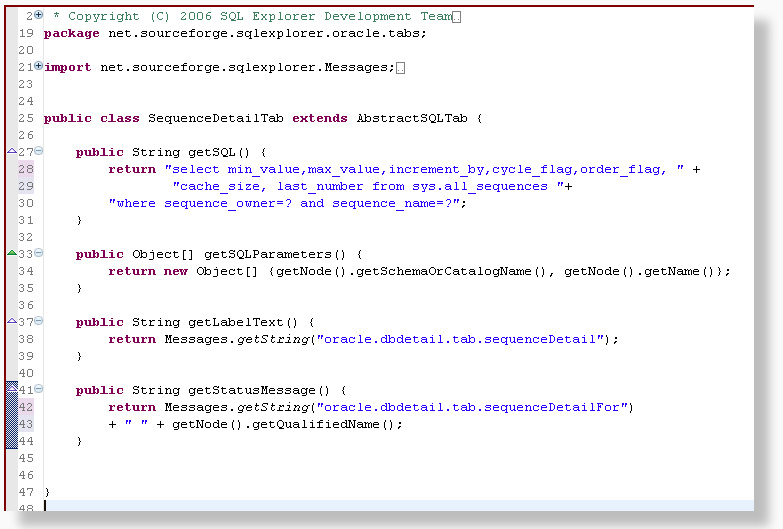
Creating a source tab
To create source tabs in the detail view, you can extend the AbstractSQLSourceTab or the AbstractSourceTab. The AbstractSQLSourceTab provides you with a preconfigured SQL based source tab. The AbstractSourceTab requires a little more work, but also gives you more control.
Below you can see a sample extension point for an AbstractSQLSourceTab. In this particular case, the extension point is valid for many different node types.
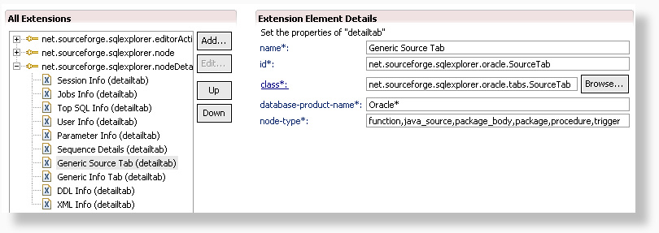
The code itself turns out to be even shorter than for a regular resultset based tab like we described above.
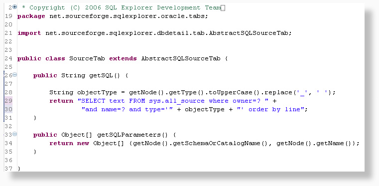
And here is the result of the source tab: